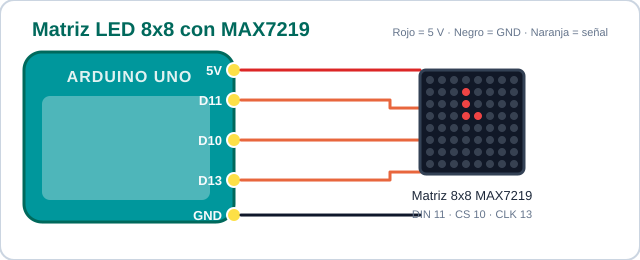
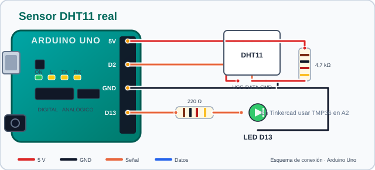

Ejercicios que se pueden hacer en Tinkercad
Ingresá a Tinkercad Circuits, creá un circuito nuevo y armá el componente indicado. Después copiá el sketch desde la ejercitación de este sitio y presioná Start Simulation. Los IDs coinciden con los de la portada.
Abrir Tinkercad Circuits ↗ Ejemplo público: LCD 16x2 ↗ Ejemplo público: LCD en galería ↗| ID | Actividad | Componentes en Tinkercad | Conexión principal |
|---|---|---|---|
ard-dig1 | LED intermitente | Arduino Uno, LED, resistencia 220 Ω | D13 → 220 Ω → ánodo del LED; cátodo → GND. |
ard-dig2 | Botón con INPUT_PULLUP | Arduino Uno, pushbutton, LED + 220 Ω | D2 → botón → GND; LED en D13. |
ard-dig3 | Semáforo | 3 LEDs (rojo, amarillo, verde), 3 resistencias 220 Ω | D8, D9 y D10, cada uno con su resistencia y GND. |
ard-ana1 | Leer potenciómetro | Potentiometer | Extremos a 5 V y GND; wiper a A0. |
ard-ana2 | PWM con map() | Potenciómetro + LED + 220 Ω | Wiper a A0; LED con resistencia en D9. |
ard-ana3 | Umbral con if/else | Potenciómetro + LED + 220 Ω | Wiper a A0; LED con resistencia en D13. |
ard-lcd1 | Primer mensaje LCD | LCD 16x2 + potenciómetro 10 kΩ | RS 12, E 11, D4–D7 en 5, 4, 3, 2; VO al wiper. |
ard-lcd2 | Cursor y limpieza | LCD 16x2 + potenciómetro 10 kΩ | Misma conexión; RW a GND y backlight con 220 Ω. |
ard-lcd3 | Mostrar una lectura | LCD 16x2 + potenciómetro 10 kΩ | LCD como arriba; segundo potenciómetro en A0. |
ard-sen1 | Sensor de luz LDR | Photoresistor + resistencia 10 kΩ + LED | 5 V → LDR → A1 → 10 kΩ → GND; LED en D13. |
ard-sen2 | Temperatura | TMP36 en vez de DHT11 | VCC 5 V, GND, OUT a A2. Usar la fórmula del TMP36. |
ard-sen3 | Ultrasónido y promedio | Ultrasonic Sensor de 4 pines | VCC 5 V, GND, TRIG D9, ECHO D10. |
ard-rob1 | Mover un servo | Micro Servo | Señal D9, VCC 5 V, GND común. |
ard-rob2 | Motor con driver | DC Motor + L293D | IN1 D7, IN2 D8, ENABLE D9; VCC2 a fuente externa. |
ard-rob3 | Robot con dos estados | Pushbutton + Micro Servo | Botón D2 con INPUT_PULLUP; servo en D9. |
ard-rob4 | Motor DC con driver | DC Motor + L293D | IN1 D7, IN2 D8, ENABLE D9; fuente externa y GND común. |
DHT.h. Usá el TMP36 en A2, leé con analogRead(A2) y convertí con (lectura * 5.0 / 1023 - 0.5) * 100 para obtener grados Celsius.Los que no se pueden hacer en Tinkercad
Tinkercad no incluye el módulo de matriz 8x8 con MAX7219 ni el sensor DHT11. Para estos casos tenés el esquema de conexión y el programa para llevarlos a hardware real; las actividades también muestran la imagen del circuito.
Matriz 8x8 · actividades ard-mat1, ard-mat2 y ard-mat3
El módulo MAX7219 usa comunicación SPI con la librería LedControl, que no está disponible en Tinkercad. En hardware real el código de las actividades 4.1 a 4.3 es:

| Pin módulo | Conexión Arduino |
|---|---|
| VCC | 5 V |
| GND | GND |
| DIN | D11 |
| CS / LOAD | D10 |
| CLK | D13 |
#include <LedControl.h>
LedControl matriz = LedControl(11, 13, 10, 1);
void setup() {
matriz.shutdown(0, false);
matriz.setIntensity(0, 8);
matriz.clearDisplay(0);
}
void loop() {
for (int x = 0; x < 8; x = x + 1) {
matriz.setLed(0, 3, x, true); // fila 3, columna x
delay(100);
matriz.setLed(0, 3, x, false);
}
}
74HC595. Usá shiftOut() para recorrer un bit de izquierda a derecha; la lógica del for es la misma que en la actividad 4.3.DHT11 real · actividad ard-sen2
El DHT11 entrega temperatura y humedad por un pin de datos digital. Necesita la librería DHT.h, que Tinkercad no permite cargar. En Tinkercad se reemplaza por TMP36; en hardware real se conecta así:

| Pin DHT11 | Conexión |
|---|---|
| VCC | 5 V |
| GND | GND |
| DATA | D2 con resistencia pull-up de 4,7 kΩ a 5 V |
#include <DHT.h>
DHT dht(2, DHT11);
void setup() {
Serial.begin(9600);
dht.begin();
}
void loop() {
float temperatura = dht.readTemperature();
Serial.print("Temp: ");
Serial.println(temperatura);
if (temperatura > 25) { digitalWrite(13, HIGH); }
else { digitalWrite(13, LOW); }
delay(1000);
}
Cómo trabajar en Tinkercad
- Entrá a Tinkercad Circuits y presioná Nuevo circuito.
- Arrastrá un Arduino Uno al espacio de trabajo.
- Buscá los componentes en el panel izquierdo y conectalos según la tabla de arriba. Usá el modo fotografía para ver los pines con claridad.
- Presioná Código, elegí Texto y pegá el sketch de la ejercitación. Si usás LCD, agregá la librería
LiquidCrystaldesde el botón de librerías. - Presioná Iniciar simulación. Abrí el Monitor serie cuando el ejercicio use
Serial.print(). - Cuando funcione, armá el circuito real con la tabla de conexiones de la guía y cargá el mismo sketch desde el IDE de Arduino.